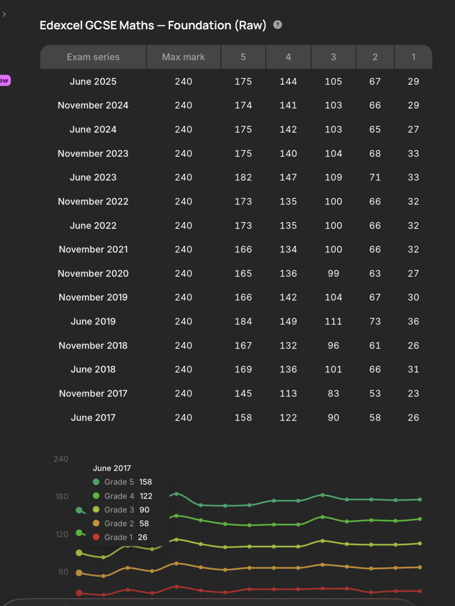
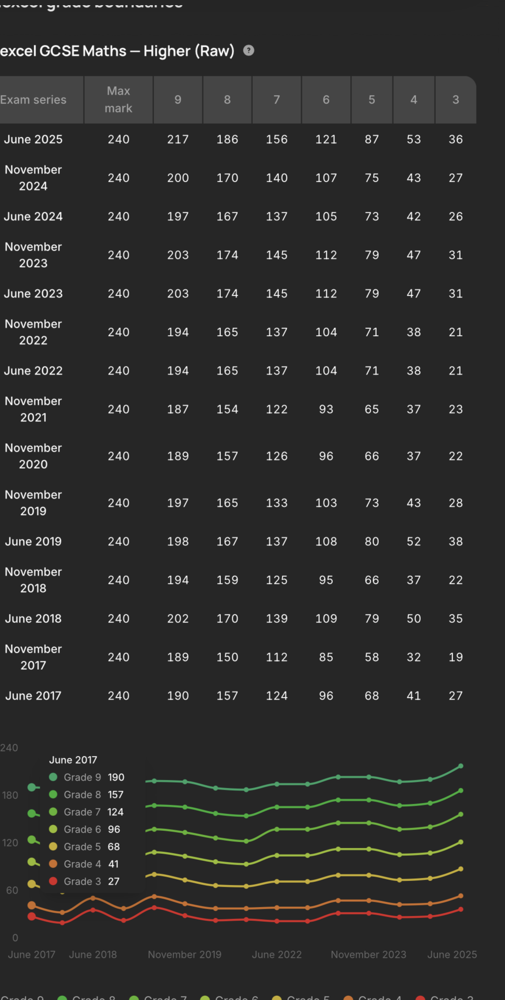

Foundation Tier — Grades 5 / 4 / 3 / 2 / 1

Source: Edexcel (Pearson). Boundaries vary each sitting — always check your specific exam board and series.
Higher Tier — Grades 9 / 8 / 7 / 6 / 5 / 4 / 3

Source: Edexcel (Pearson). Boundaries vary each sitting — always check your specific exam board and series.